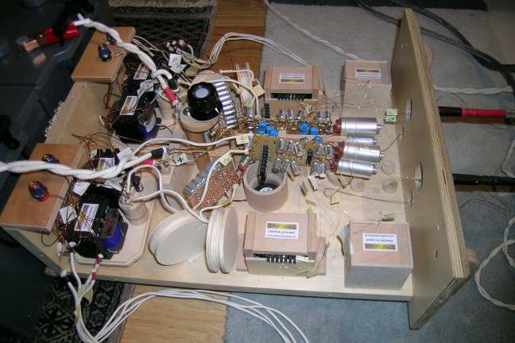
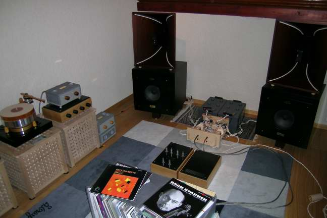
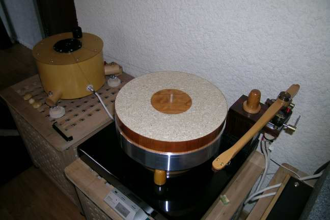
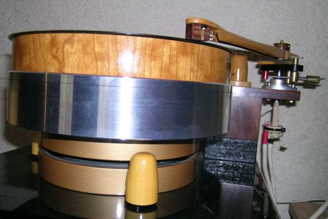
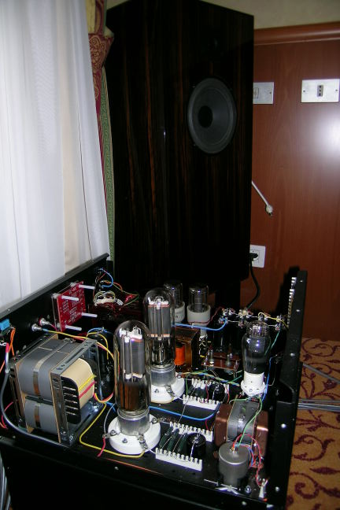
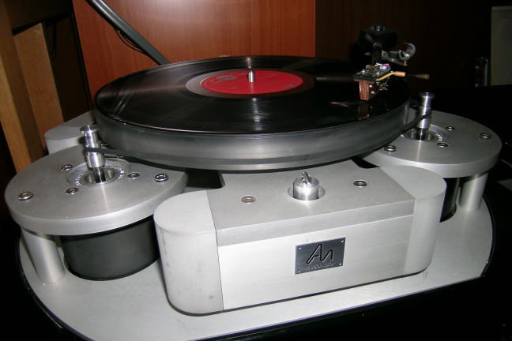

Dear
audiophile friends,
Dear
audiophile friends,Visiting Audio Consulting:
Dear
audiophile friends,
after my last email on the digital amplifier TacT TDA2200, today I would like to tell you about my recent (29/04/06) visit to Audio Consulting, near Geneve. First, I have to say that the Audio Consulting Deus ex machina, Serge Schmidling, is a very, very kind person. He had no problem to accept, only a few days before, my request to visit him the next saturday, in the Audio Consulting site, which is also his own home.
His web site is: http://www.audio-consulting.ch

His listening room is quite small, all covered with oiled wood, since he strongly believes in natural materials, and is trying to avoid magnetic materials as much as possible. His equipment is based on a 8 Watt solid state amplifier (first two pictures), which uses a parallel of many FET in plastic case as active stage.Of course, there are many -input, interstage, output- Silver Rock transformers and all the -internal and external- cables are done with silver wire (without shielding if the cable is shorter than a few meters). The amplifier is powered by a -100 Ah?- special battery.
The speakers are the italian Mantra Sound "Dulcet" with two "headphone-like" cones loaded by a wooden horne, coupled with a big (32cm?) woofer and with an external crossover (see picture 3).

Really special components are also the sources. First, the analog source is a Verdiere Platine turntable -highly modified- with a Morsiani tonearm, Teres Audio motor (powered by battery) and Koetsu Red cartridge (pictures 4 and 5). The turntable implemented a "slow" feedback from the plate to the motor to correct the angular velocity.
|
 |
 |
Of course, the phone preamplifier was done with Silver Rock MC transformers and inductor RIAA filter. If that source is not enough complex for you, think about the digital source, which was... a small HP computer (iPalm)!!! In fact, the Audio Consulting way to digital sound is to read the CD and save them (not compressed!) in a 5GB Compact Flash, which can be inserted in the portable computer and played. In this way, the D/A conversion is made by the small HP palm! No rotating parts, no motors, low jitter. But why?
I think that Serge is playing with such toys, because he strongly believes in the importance of a good main power (remember when playing with the T-amp power supply?). With such a small device (CF reader and A/D converter) the only thing you can change is the main power you are using. Serge made us listen to 4 trials:
1) the main power using the original HP small AC/DC supply connected to the "normal" AC main power.
2) the same but with the normal AC power supply filtered by a series of two big Audio Consulting transformes (AC filters).
3) the same as 2, but connected to the main AC obtained from two 380V phases and a big main transformer instead that from the normal 220V + neutral.
4) using a big DC battery.
What was really surprising for me was the big difference of point 3 respect to point 2. Unfortunately I can't have in my flat the 380V, but if you have it, let try to avoid the neutral cable, which, for Serge, is the main source of AC noise (he says that high armonics on the neutral could saturate the main transformer). The final question is how this system sounds?
Well, my impression is that it is wonderfull in some parameters, but not in all. For example, the tonal responce was really excellent, something near to the very expencive (200.000E?) Audio Note system which I listened to the last Top Audio (see the following pictures).
|
 |
 This is the Audio Note UK top system as I have listened at the italian Top Audio 2005 |
Second, there is a good resolution, with many armonics in the high frequencies, as I like it to be. Third, the dynamic and velocity of transient are really wonderfull. Where this system is "not perfect" for me is in the 3D soundstage. That can be due to the -small- room and to the horn-loaded speakers. Also, the very low frequencies have not the big impact of, let say, the Avalon Eilodon in big room. All togheter the systems sounds to me very "natural", and that is a very important parameter.
To conclude my short report, I add for you the main points that I believe are guiding the Audio Consulting filosophy.
choice of material, trying to avoid metals and plastic, and using a lot of wood and silver (which, by the way, *is* a metal, but seems that his oxidation is better than the copper one);
try to avoid energy dispersion in heat. AC like to have high efficiency, to drive all the good energy in music. Also they prefere small fans than metal dissipators.
cure of the main power supply, using a lot of good transformers to purify the main AC from spury armonics, in particular in the neutral cable. Battery is an alternative, but not an easy one.
be always open-minded: Serge started with analog and vacuum tubes, but now he plays with low power FET and... Compact Flash! So he is just trying to discover what makes "Emotions in Sound"!
Enjoy your listening!
Tino © April 2007